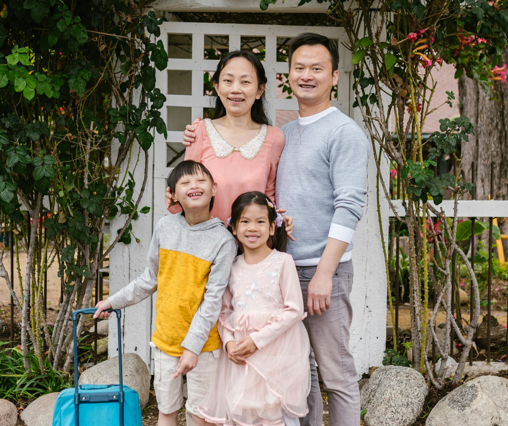
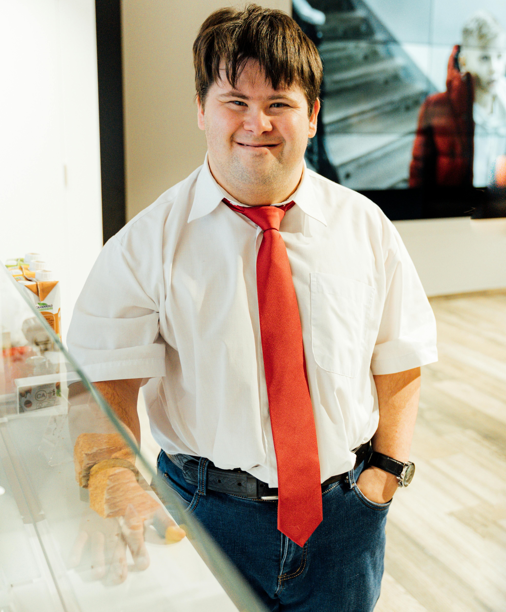

A família é o primeiro grupo em que a pessoa é inserida, e sua importância é grande, pois ela influencia o comportamento e a formação da personalidade. O nascimento de uma criança pode trazer mudanças para toda a estrutura familiar. Não há nada que cause mais mudanças ou desafios na família do que a chegada de uma nova criança.
Processo Do
Contexto Familiar
Mudanças
A família é o primeiro grupo em que a pessoa é inserida, e sua importância é grande, pois ela influencia o comportamento e a formação da personalidade. O nascimento de uma criança pode trazer mudanças para toda a estrutura familiar. Não há nada que cause mais mudanças ou desafios na família do que a chegada de uma nova criança.
Os pais costumam imaginar como será o bebê, pensando no sexo, no desempenho escolar, na carreira e até na orientação sexual. O lugar da criança na família é determinado por essas expectativas. Quando nasce uma criança com deficiência, essas expectativas são abaladas, e a família enfrenta uma situação inesperada. Os planos para o futuro do bebê mudam, e os pais precisam repensar sua experiência de parentalidade. A família passa por um processo de aceitação até que consiga criar um ambiente adequado para incluir a criança com deficiência mental

Os Irmãos
É de se destacar tanto os aspectos positivos quanto os negativos mencionados pelos irmãos de crianças com deficiência. Entre os pontos positivos, os irmãos relatam que se tornam mais maduros, responsáveis, altruístas, tolerantes e desenvolvem preocupações humanitárias. Além disso, sentem um maior senso de união na família, mais autoconfiança e independência. No entanto, os irmãos tendem a lidar melhor com a situação quando a família é maior, as condições financeiras são melhores, os pais têm uma atitude positiva em relação à criança com deficiência, os irmãos são mais novos, a criança com deficiência ainda é pequena e a deficiência é menos grave.
Conviver com um irmão com deficiência pode ser uma experiência desafiadora, cheia de sentimentos bons e ruins. O acompanhamento de um psicólogo é importante para apoiar os irmãos, fornecendo informações, orientação e ajudando-os a lidar com essa relação.

Conflitos na família
A ideia de que famílias com filhos deficientes têm, necessariamente, sua qualidade de vida abalada precisa ser repensada. Os conflitos não surgem diretamente por causa da deficiência, mas pela capacidade da família de se adaptar à situação.
ortanto, a ideia comum de que uma criança com deficiência sempre causa conflitos na família não é comprovada por pesquisas. Essas famílias podem estar em uma situação de risco, mas isso não significa que esse risco sempre se tornará um problema real.
Grupo de apoio para os pais
Programa de intervenção precoce para famílias com filhos deficientes podem ajudar muito os pais nos primeiros dezoito meses de vida da criança. Em comparação com um grupo de controle que não participou do programa, os pais que receberam a intervenção se adaptaram melhor à deficiência do filho, se sentiram menos ameaçados pela situação e enfrentaram menos estresse emocional, ansiedade e depressão.
Participar de grupos de intervenção e programas de apoio pode ser muito útil para os pais de crianças deficientes. Esses programas oferecem mais informações e recursos para enfrentar e se adaptar à nova situação, além de permitir que os pais compartilhem suas experiências com outras famílias que passam por desafios semelhantes. Se os pais tiverem dificuldades em lidar com o nascimento de um filho com deficiência, é importante que busquem o apoio necessário para se adaptar à nova rotina e melhorar os laços familiares.
Grupo de apoio para os irmãos
Grupos de apoio para irmãos de crianças com deficiência ajudam a aumentar a autoestima e a perceber a importância de ter mais paciência com o irmão deficiente. Além disso, conhecer outras crianças que também têm irmãos com deficiência trouxe sentimentos positivos para eles. O tempo que essas crianças passaram longe de seus irmãos com deficiência foi considerado valioso, pois proporcionou mais privacidade e a oportunidade de conviver com outras pessoas.
Como cada família supera uma crise varia conforme seus recursos e a gravidade da situação. Esse é um momento em que podem ocorrer tanto crescimento e fortalecimento das relações quanto o risco de problemas emocionais, tanto para as pessoas envolvidas quanto para os laços familiares.

O futuro
Para famílias com um membro com deficiência, as fases de desenvolvimento podem ser afetadas pela adaptação da família a essa situação. Além das crises normais que qualquer família enfrenta, essas famílias também lidam com as particularidades da deficiência, suas características e seu desenvolvimento ao longo do tempo. Os pais de crianças com deficiência se preocupam continuamente, desde o nascimento do filho até a velhice, principalmente porque há uma falta de instituições que possam cuidar dessas pessoas à medida que envelhecem.
Nos últimos anos, essa preocupação com o envelhecimento aumentou, pois, com os avanços em cirurgias e tratamentos, a expectativa de vida das pessoas com deficiência cresceu bastante. Miltiades e Pruchno (2001) realizaram uma pesquisa com mães de filhos adultos com deficiência e descobriram que elas continuam a viver situações de cuidado e responsabilidade pela vida de seus filhos. Elas negociam com instituições de apoio e ajudam nas atividades diárias, assumindo assim um papel de cuidadoras por toda a vida.